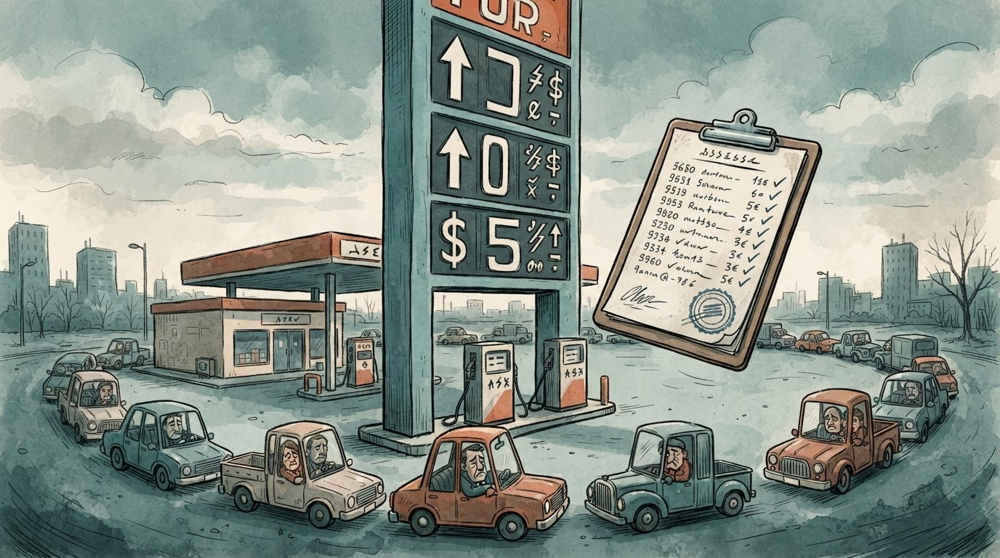

Pompa, në pritje të një çmimi që s'bie prej dy dekadash
Shqipëria
Bordi i Transparencës: nafta 219 lekë, benzina 195 — tavan që duket si dysheme për xhepin
Çmimet e reja hyjnë në fuqi sot në orën 16:00 dhe mbeten deri në mbledhjen e radhës — që ndodh "kur të ketë rëndësi", pra kur të mos ketë.